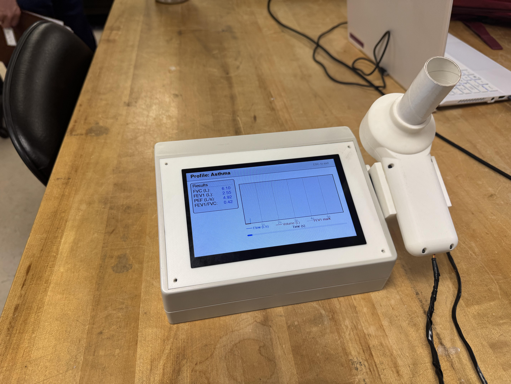
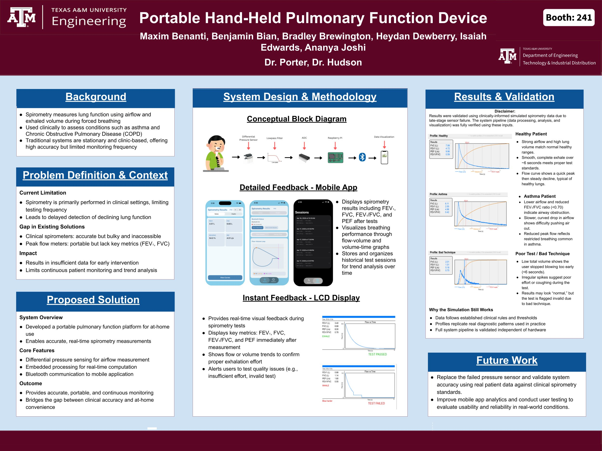
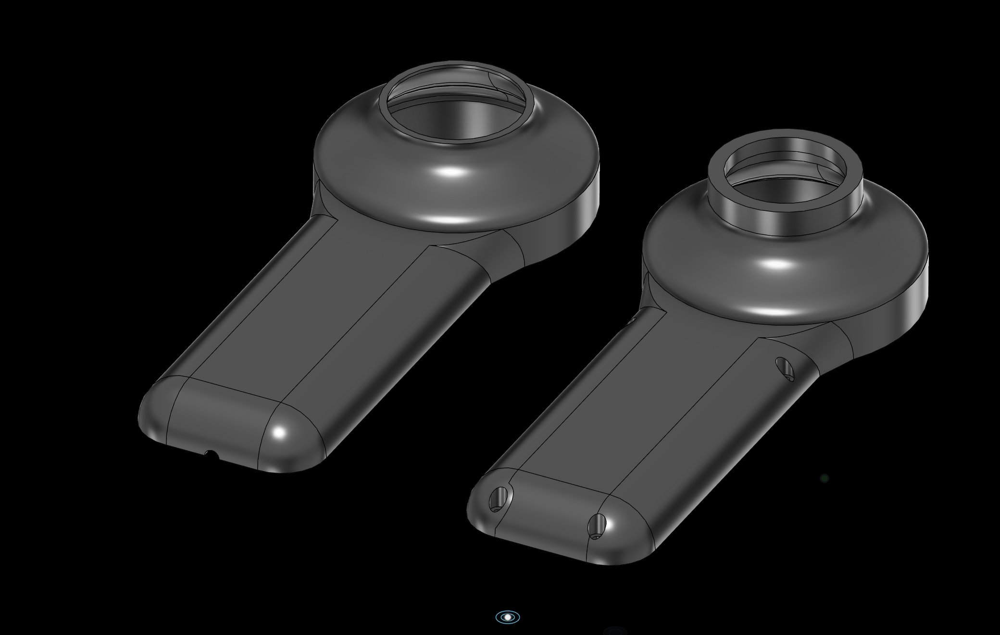
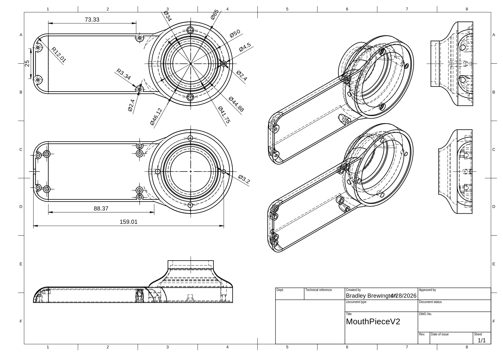
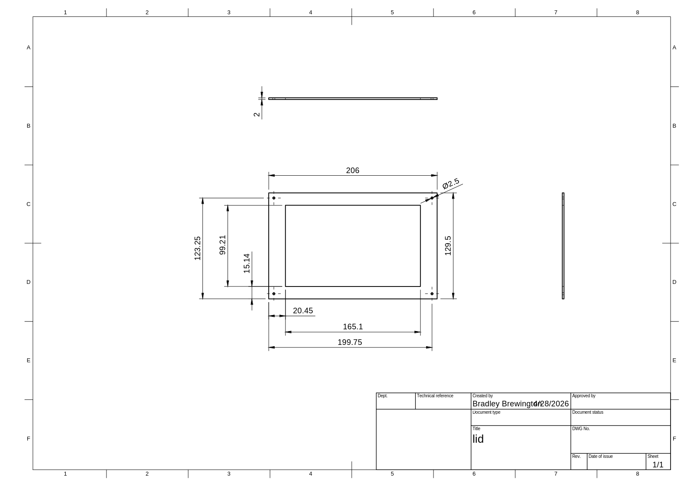
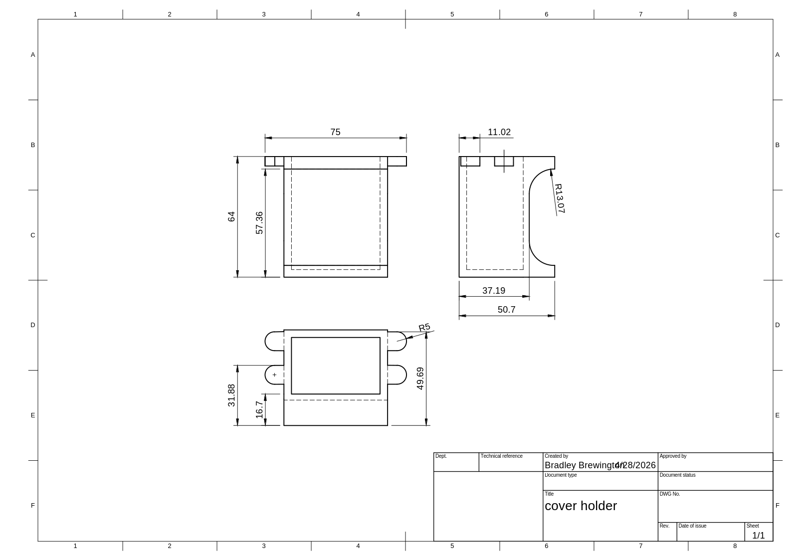

Portable spirometer
Senior capstone project to design a portable, low-cost spirometer that approaches clinical accuracy. The device measures forced exhalation airflow and computes FEV1, FVC, FEV1/FVC, and PEF, displays results on an LCD and a paired iPhone app, and stores session data for trend monitoring. The pressure sensor failed during the final demo, so that demo ran on simulated patient profiles rather than live measurements. Six-person team; I led the mechanical design of the mouthpiece, flow path, and enclosure.
- Timeline
- August 2025 — May 2026
- Team
- Heydan Dewberry (PM), Maxim Benanti (EE), Isaiah Edwards (TE), Bradley Brewington (Hardware), Ananya Joshi (SE), Benjamin Bian (Embedded). Advisors: Dr. Porter, Dr. Hudson. Stakeholder: Professor Smith.
- Stack
- HSCD differential pressure sensor, MCP6002 op-amp, MCP3008 ADC, Raspberry Pi Zero 2 W, BLE, LCD, custom PCB
- My role
- Hardware Engineer (team title). Mechanical design lead in practice: mouthpiece, flow path, enclosure, manufacturing drawings.
- Status
- Functional prototype assembled and demoed. Pressure sensor failed during final demo. System validated on simulated profiles.
The problem
About 25 million Americans, including 4.6 million children, have asthma. Lung function data is captured a few times a year in clinics, but symptoms vary day to day at home. The two existing options force a tradeoff: clinical spirometers are accurate but cost $1000 to $3000 and are clinic-bound, and peak flow meters are portable and cheap but give a single reading that depends heavily on technique.
The project goal was a device that approaches clinical-grade flow and volume measurement at a portable form factor and a price point that makes daily home use realistic. Beyond a single number, it produces flow-volume and volume-time curves, computes the standard clinical metrics (FEV1, FVC, FEV1/FVC, PEF), and stores session data so users can see deviations from their own baseline over time.
How it works
The user exhales forcefully through a handheld mouthpiece. Inside the mouthpiece, a nylon mesh creates a controlled resistance to airflow, producing a pressure differential across it. An HSCD differential pressure sensor reads the pressure on each side and outputs an analog voltage proportional to the difference. The signal passes through a second-order Sallen-Key Butterworth low-pass filter (2 kHz cutoff, MCP6002 op-amp) into a 12-bit MCP3008 ADC. A Raspberry Pi Zero 2 W reads the ADC over SPI, converts pressure to flow to volume, computes the spirometry metrics, and pushes results to an LCD on the base unit and over BLE to an iPhone app for session storage and trend analysis.
What the team built
A handheld 3D-printed mouthpiece with a replaceable hygienic tip and an integrated flow-straightening mesh. A custom PCB carrying the pressure sensor, filter, ADC, and Pi interface. A base enclosure housing the Pi, battery, and LCD. Firmware on the Pi for sampling, conversion, metric computation, and BLE transmission. A Swift iPhone app for session results, trend views, and baseline comparison. Total bill of materials: $494.57.
Final demo
The functional prototype was complete: enclosure, mouthpiece, PCB, Pi, LCD, app, and BLE link. The differential pressure sensor output stuck at 0.8 V during the demo, suspected to be a hardware fault or ADC interface issue, and no valid airflow data could be captured. The team demoed the full pipeline using three simulated patient profiles (healthy, asthmatic, bad technique) to show the metric computation, LCD display, and app trend views. BLE was partially integrated but a UUID mismatch prevented full end-to-end pairing.


My contribution
I was the mechanical design lead on the team. My scope covered the mouthpiece, the flow path, the enclosure, and the manufacturing drawings for fabrication.
The mouthpiece does two jobs. It has to be comfortable to use one-handed for a forced exhalation, and it has to produce a controlled, repeatable pressure differential across the flow-straightening element so the differential pressure sensor reads a clean signal. The first job is ergonomic. The second is fluid dynamic.
For the flow-straightening element I researched a Fleisch pneumotachograph design (an array of small parallel tubes that forces laminar flow and produces a linear pressure-flow relationship) and a simpler nylon mesh membrane. The Fleisch design is more accurate but harder to manufacture cleanly at 3D-printing tolerances. We went with a nylon mesh that produced an adequate pressure differential at the expected flow rates with much simpler fabrication. The mesh sits between the inlet and outlet barrels of the mouthpiece and is held in place by the assembly geometry.
I went through two design iterations on the mouthpiece body (V1 to V2). V2 tightened the seal around the mesh, improved the grip geometry, and added bosses for the threaded inserts used to secure the replaceable hygienic tip.
The base enclosure houses the Raspberry Pi, the PCB, the LCD, and the battery. I designed the lid as a separate part so the LCD could be mounted from the inside and the assembly could be opened for service without disturbing the wiring. The mouthpiece holder is a small standalone part that lets the mouthpiece sit upright on the base when not in use.
Everything was modeled in Fusion 360 and 3D-printed on the lab’s printers for fit-checks before final fabrication. The dimensioned drawings below are what I produced for the manufacturing handoff.



